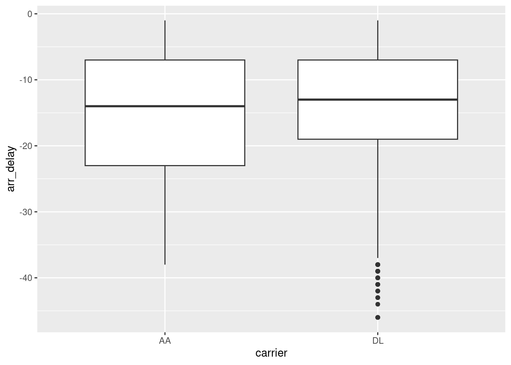
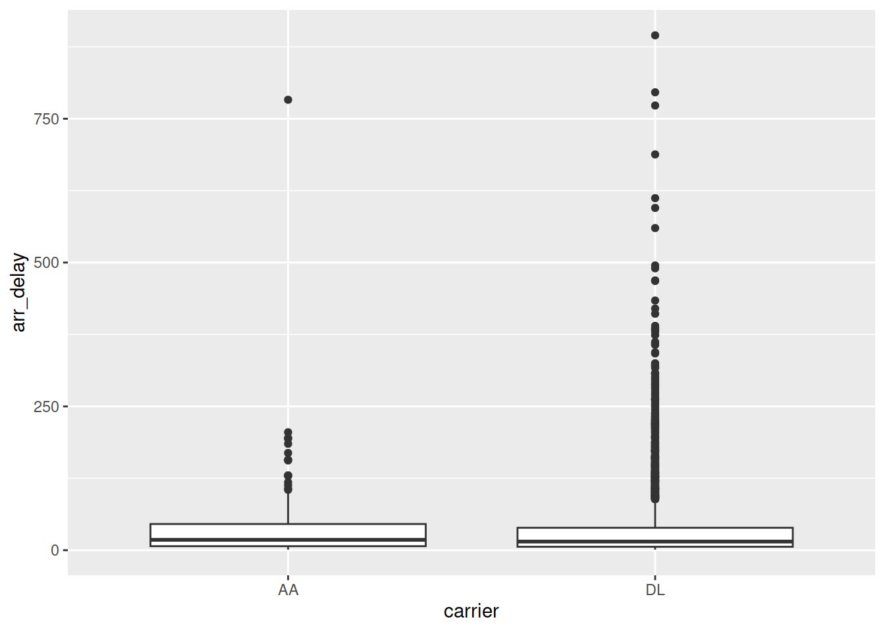
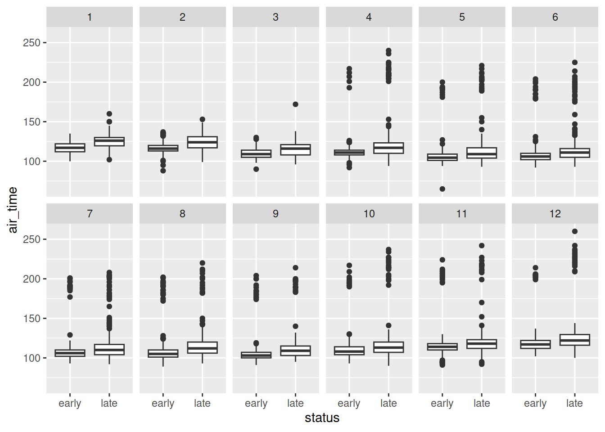

Associated Material
Module: Module 07 - Combining data
Readings
How to combine datasets together
rbindcbind
cbind and maintaining data
integrityAdding additional columns onto data sets by using a common identifier (key) between datasets to maintain data relationships
inner_join from dplyr will join datasets
on a key and at the same time filter so that only rows where there is a
matching key will be keptleft_join and right_join from
dplyr will join datasets on a key and keep all rows from
the specified ‘side’ of the join, and filling in the non-matching
entries with NAfull_join from dplyr will join datasets on
a key and keep all rows from both datasets filling in columns of
non-matching entries with NA
flights and planes from the
nycflights13 package, how many flights were flown in April
2013 by aircraft with each engine type? e.g. Turbo-fan, Turbo-jet,
etc.
flights for the carrier AA with a
destination (dest) of IAH, and carrier
DL with a destination of ATL were late? and
how many early?
carrier and
dest, and fill in the specific data.flights,
specifying by = c("carrier", "dest") to result in a
dataframe with rows matching the conditions, assign into
flights_of_interest.flights_of_interest and create two new
datasets, one for the late arrivals (late) and the second
for early arrivals (early). How many rows in each?
early and late) you
created in 2, create:
early and late
using arr_delay by carrierstatus onto each dataset with the
values “early” for early and “late” for
latemonth, with 6
columns and 2 rows (hint look up facet_wrap). Are there any
trends you notice?library(tidyverse)
library(nycflights13)
flights %>%
filter(month == 3 & year == 2013 & !is.na(arr_time)) %>%
inner_join(planes, by = "tailnum") %>%
group_by(engine) %>%
summarise(n_flights = n())
#> # A tibble: 6 × 2
#> engine n_flights
#> <chr> <int>
#> 1 4 Cycle 3
#> 2 Reciprocating 165
#> 3 Turbo-fan 20114
#> 4 Turbo-jet 3391
#> 5 Turbo-prop 9
#> 6 Turbo-shaft 48carrier_dest <- data.frame(carrier = c("AA", "DL"), dest = c("IAH", "ATL"))
flights_of_interest <- inner_join(flights, carrier_dest, by = c("carrier","dest"))
late <- flights_of_interest %>% filter(arr_delay > 0)
early <- flights_of_interest %>% filter(arr_delay < 0)
nrow(late)
#> [1] 4419
nrow(early)
#> [1] 6088ggplot(early, aes(x = carrier, y = arr_delay)) + geom_boxplot()
ggplot(late, aes(x = carrier, y = arr_delay)) + geom_boxplot()
early <- early %>% mutate(status = "early")
late <- late %>% mutate(status = "late")
rbind(early,late) %>%
ggplot(aes(x = status, y = air_time)) +
geom_boxplot() +
facet_wrap(vars(month), nrow = 2, ncol = 6,)